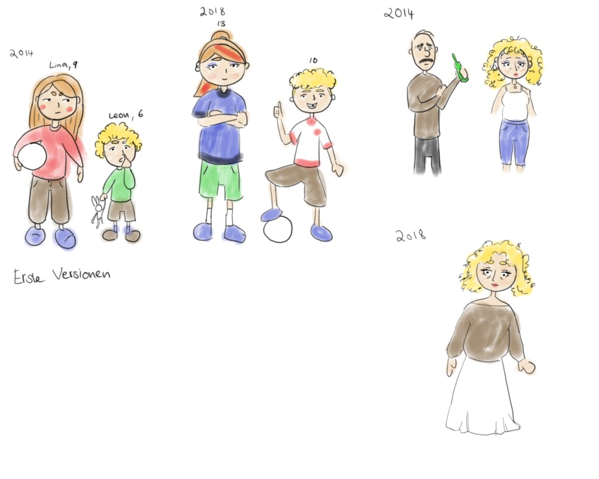

Heimspiel
Es ist 2014, Deutschland wird dieses Jahr Weltmeister. Während Lina die emotionale Abwesenheit ihres Vaters spürt, spürt Leon 4 Jahre später die physische Abwensenheit.
Von Sara Beierle
Charakterdesign

Es ist 2014, Deutschland wird dieses Jahr Weltmeister. Während Lina die emotionale Abwesenheit ihres Vaters spürt, spürt Leon 4 Jahre später die physische Abwensenheit.
Von Sara Beierle
